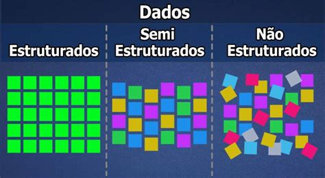
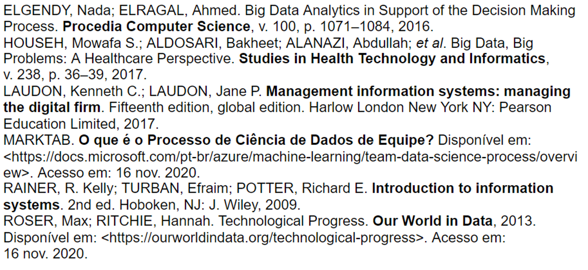

BIG DATA &
Ciência de Dados
Alunos:
Tiago Matos
Victor Bonin
Demônio de Laplace
“Devemos considerar o estado atual do universo como o efeito de seu estado anterior e como a causa do estado posterior. Um ser inteligente que conheça todas as forças que atuam na natureza em um determinado instante, bem como as posições momentâneas de todas as coisas no universo, seria capaz de compreender, em uma única fórmula, os movimentos dos maiores corpos e os átomos mais leves do universo”
- Laplace
Princípio da Incerteza
“Estabelece que não podemos medir com precisão duas variáveis complementares de uma partícula, ou seja, quanto mais precisamente tentamos medir a posição de uma partícula, menos precisamente conseguimos medir sua velocidade e vice-versa. Desse modo, as medições de posição, momento linear, carga, elétrica, velocidade, impulso, rotação e outras seriam cada vez menos precisas”
- Heisenberg
Ordem ou Caos?
Dados
São sinais não processados. Podem ser compostos de números, sinais elétricos, palavras, sons, imagens
Informação
Atribuição de significado aos dados
Conhecimento
Significa a conexão das informações dando um sentido mais amplo
Como organizar?

SGBD
Sistema de gerenciamento de banco de dados
Estrutura de dados
Tipos de dados

Como sobreviver?
- Aumento da produção de dados no mundo com as redes sociais, compartilhamento de fotos, midias, etc
- Difusão do uso de celulares
- Aumento da capacidade de processamento
Enfim
Big Data
Definição
O termo Big Data é o conjunto de dados que se tornou tão grande ao ponto de ser impossível trabalhar com eles utilizando os sistemas tradicionais de gestão de banco de dados
Características
- Volume
- Valor
- Velocidade
- Veracidade
- Variedade
Data Science

Definição
Ciência de dados é um campo amplo que se refere aos processo coletivos, teorias, conceitos, ferramentas e tecnologias que permitem a revisão, análise e extração de conhecimento e informação a partir de dados brutos. É voltado para ajudar indivíduos e organizações a tomar melhores decisões a partir de dados armazenados, consumidos e gerenciados.
Processos em Data Science

Cientista de Dados
Competências de Cientista de Dados segundo linkedin
- Comunicação
- Gestão de Dados Estruturados
- Matemática
- Gestão de Projetos
- Data Mining e Visualização
- Design de Experimentos
- Gestão de Dados
- Design e Desenvolvimento de Produtos
- Modelagem estatística
- Desenvolvimento de negócios
Habilidades de Cientista de Dados
- Conhecimento em linguagens de programação de análise de dados (R, Python e SQL)
- Visualização de Dados
- Data Mining
- Estatística
- Infraestrutura de Big Data (Hadoop, MapReduce e Spark)
- Machine Learning
- Engenharia de Software
- Álgebra Linear
- Foco em solução de problemas
Visualização de Dados
"Eu defendo que a observação e o conhecimento devem preceder qualquer tipo de ação."
Strange, Stephen
Referências:
Feito em reveal.js
MIT licensed
Copyright (C) 2011-2020 Hakim El Hattab, https://hakim.se
Disponível em: TiamatCod3/apresentacaoFSI